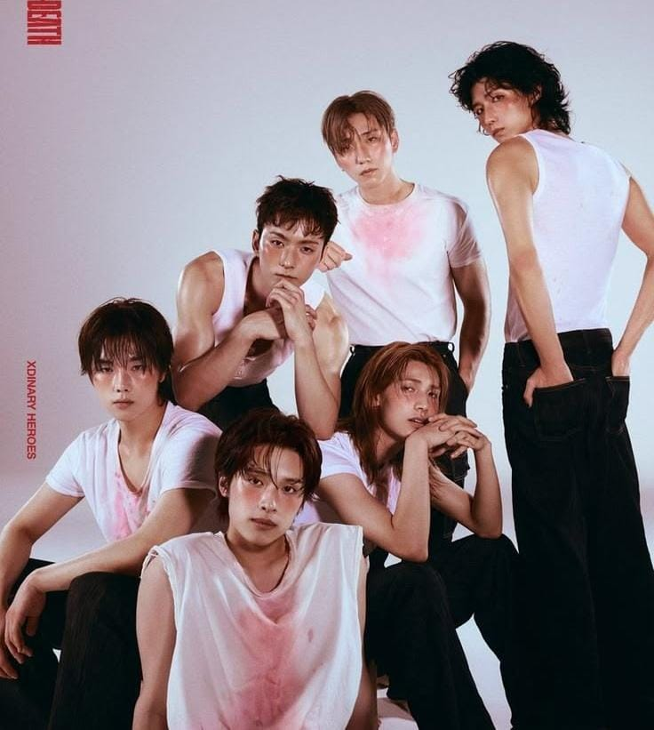

My Biodata
~ page 1 of my diary ~
♥ All about me ♥
| Personal Details |
| Full name |
Aisyah Saffiyah Binti Yahaya |
| Date of birth |
7th March 2006 |
| Place of birth |
Kluang, Johor |
| Age |
20 years old |
| University |
UiTM Segamat, Johor |
| My Favourites |
| Hobbies |
Reading and watching romance genre |
| Favourite food |
Nasi Ayam Penyet |
| Comfort food |
Desserts |
| Favourite colour |
Pink!!! ♥ |
Fun facts about me ★
- My dream is to become a counsellor or a psychiatrist.
- I'm a super introvert.
- People tell me I'm a good listener, and they find comfort in me.
My Interests ♥

XDINARY HEROES
I'm also a big fan of XDINARY HEROES!
Pride and Prejudice
My favourite movie! I have watched it countless times.
Movie info on IMDb
♫ Listen on Spotify ♫
(\_/)
(^_^)
/ >♥
thanks for reading!
↑ back to top